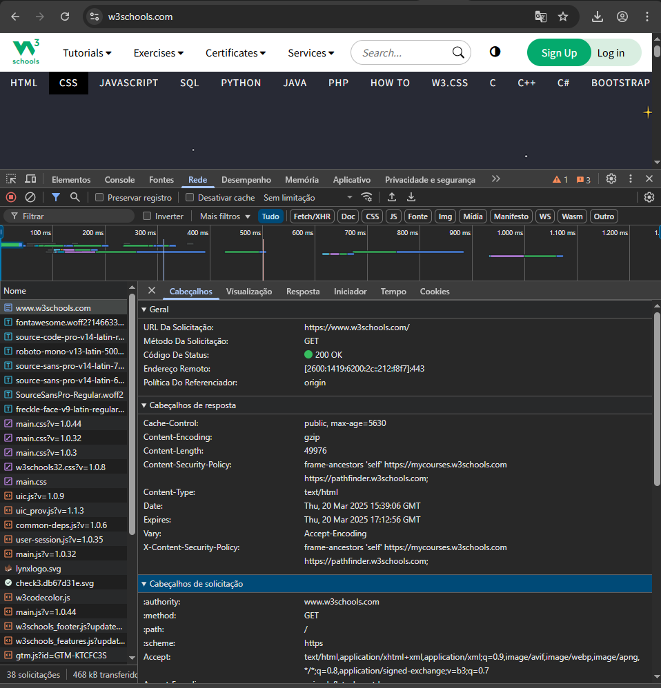
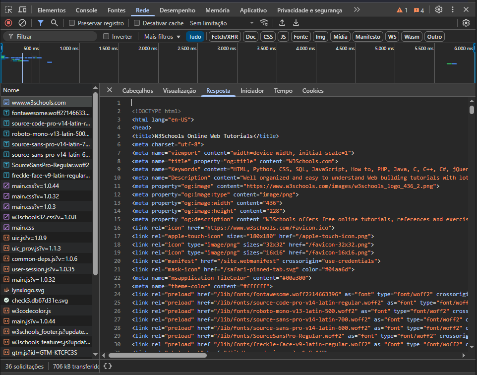

O HTTP (Hypertext Transfer Protocol) é um protocolo de comunicação usado para transferir informações na Web. Ele define como as mensagens são formatadas e transmitidas entre um cliente (como um navegador) e um servidor web.
Quando você acessa um site, o navegador envia uma requisição HTTP para o servidor onde o site está hospedado. O servidor então responde com um HTTP Response, geralmente contendo uma página HTML, que o navegador interpreta e exibe para o usuário.
O HTTPS (Hypertext Transfer Protocol Secure) é uma versão segura do HTTP que usa criptografia para proteger os dados trocados entre cliente e servidor. Isso é essencial para garantir a segurança em transações bancárias e envio de senhas.
Vamos utilizar o site https://www.w3schools.com/ para visualizar o passo a passo das requisições e seu respectivo retorno
Ao acessar o site https://www.w3schools.com/ o navegador envia uma requisição para o servidor do tipo GET para obter informações do site
Conforme na imagem podemos ver que o servidor retornou o código 200 OK que significa que a solicitação foi processada com sucesso.
O servidor retornou um documento do tipo HTML que foi processado e exibido ao usuário pelo cliente (navegador).
Na imagem acima mostra o Request (Solicitação) e o Response (Resposta) e alguns detalhes desse processamento.
Descrição dos campos com importância para a solicitação:
| Campo | Endereço |
|---|---|
| URL da solicitação | Indica o domínio do servidor ao qual a requisição está sendo feita. |
| Método da solicitação | GET – Solicita informações do servidor (ex: acessar uma página). |
| Codigo do Status | Os códigos de status de resposta HTTP indicam se uma solicitação HTTP foi bem-sucedida ou não. Eles são agrupados em cinco classes: Informativas: 100–199; Bem-sucedidas: 200–299; Redirecionamento: 300–399; Erro do cliente: 400–499; Erro do servidor: 500–599; |
| Campo | Endereço |
|---|---|
| Content type | Indica o tipo do arquivo de resposta recebido. Ex.: HTML, JS, CSS |
| Date | Data e hora do retorno da solicitação |
| Acept | Todos os tipos de arquivos que são aceito spelo navegador como resposta |